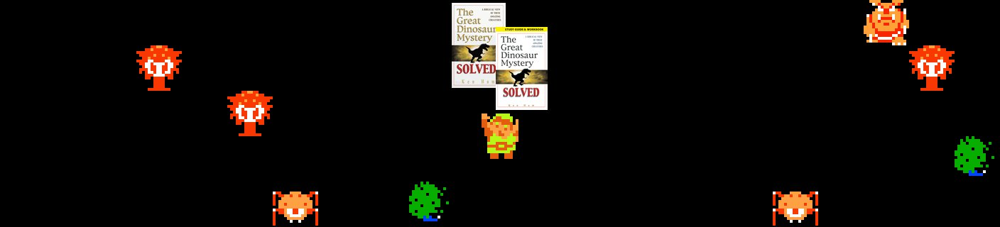

People were reporting to me that my bot, @linkfinds, was replying to them, and they were getting notifications, but when they went to check their mentions (the “Notifications” tab in web Twitter), the reply was not there. They could see the reply if they scrolled down in their timelines, however.
For them, it was a frustrating experience. They’d get a notification, then go to Notifications and couldn’t find anything.
I read Twitter on the computer via Tweetbot for Mac. I did a few tests from there, and things seemed fine – replies to me showed up in my Tweetbot “Mentions” tab. I’ve been busy, so sadly, it slipped out of my focus.
Another wave of people brought it up, though, and I did check it out again, and I did see it happen on web Twitter and the iOS Tweetbot. Dant-dant-dah!
I did various experiments with setting reply-related in the bot’s reply posts. Previously, it had just been setting the in_reply_to_status_id_str field. I tried setting all of these in various combinations:
in_reply_to_status_id
in_reply_to_status_id_str
in_reply_to_user_id
in_reply_to_user_id_str
in_reply_to_screen_name
None of this mattered; replies still did not show up in the mentions of those they were directed at. That makes sense since @godtributes, @mountainkilwala, et al only set in_reply_to_status_id_str or in_reply_to_status_id, and their replies all show up in their addressees’ Notifications/Mentions.
Next, I tried running the bot with another account’s credentials. This made a difference. Replies from the bot via that account did show up in mentions. The problem was with the account itself.
I do not know for certain why that account’s replies got filtered from the Twitter Notifications tab. However, I speculate that it has to do with it being tagged as a bot early on. When I created the account, I immediately did the OAuth dance to get a token, then used that token to post with the bot right away.
I then got an error message from the Twitter API explaining that the account had been disabled for “automated behavior”. At the Twitter web site, I was told I could reenable the account by adding a phone number and verifying it, so I did that.
Maybe at this point, the account was placed in some Twitter user segment whose replies are all filtered out of the Notifications tabs. Perhaps this is a sort of hellbanning that prevents spam bots from noticing that they are no longer reaching anyone.
Here’s some things that I speculate could have lead to the account disabling and possible user segment tagging:
- Posting via API before posting manually via web Twitter.
- Posting before setting up a profile with a userpic.
- Skipping entering a phone number during sign up.
- Adding an app (to get the OAuth token) before setting up a profile with a userpic.
Again, I can’t prove that any of these things matter or that the original @linkfinds account was put in a special user segment are a result. All I can say to botmakers – or all Twitter users, really – is that if your account gets disabled, after you reenable it, check that everything still works before proceeding.
As for the Link Finding Things bot, I had no recourse but to move it to another account. So, I changed the original account’s username to @linkfinds_old, then created a new account with the username @linkfinds.
I tried to let people know that if they’re following @linkfinds_old, they need to follow @linkfinds instead. I know tons of people will miss that tweet, but it’s all that can be done.

Update, 6/23/2016: Well, after working fine for a while, the new account somehow got flagged such that its notifications don’t show up, either. ¯\_(ツ)_/¯ I’m not going to spend any more time on this.
Twitter is a great platform for this kind of entity, yet at the same time, it’s not really at all transparent to developers about things like this. I really wish there was another venue where something like Link Finding Things could live. Well, it does live on Tumblr, too, but can’t really interact with followers the same way. From a certain perspective, I’m lucky it wasn’t worse. Other bot makers have had their keys revoked without explanation.